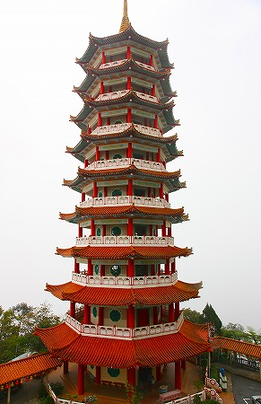
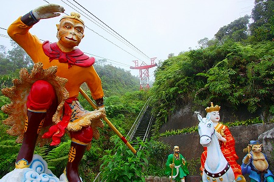

今回の
馬来西亜珍寺大行進は雲上の人工都市からスタートさせていただく。
首都、クアラルンプールから車で約1時間、ロープウェイに乗り換え熱帯雨林の原生林の上を進んでいくと突然巨大な都市が現れる。
それが
ゲンティンハイランド。カジノ、ホテル、プール、遊園地、劇場などが集まった高原リゾート地である。
ここが開発されたのは1970年代、
マレーシア唯一の公認カジノとしてアジア全域から大勢の客を呼び込んでいるという。
標高が1700ｍもあるのでクアラルンプール辺りでだらだら汗をかいていてもここでは上着がないと寒いほど。
…と、ここからお得意の
カジノ攻略法になだれ込んでもいいのだが、今年の俺は一味違うぜ。
無駄話が長すぎて本題に入るのを忘れちゃう、という悪癖を克服すべく、ここは心を鬼にしてルーレットや大小の話は自粛します！
何たってこちとら修行なんすよ、大将。
…というわけでカジノやテーマパークには脇目もふらず一路目的の寺に向かう。
向かった先は山頂のカジノやホテルやレジャー施設があるエリアより車で10分ほど下った場所。
かつてはロープウェイ（先ほど乗ってきたのとは別路線）があったが、近年廃線になっちゃった模様。
寺の名は
清水岩廟。
ゲンティンハイランドの創設者にしてアジア屈指の大富豪、
林梧桐（Lim Goh Tong)が開いた寺である。
この寺、ゲンティンハイランドのアトラクション同様、かなりキテる。
駐車場からお寺の様子を見て大興奮。
山肌の斜面にへばりつくように
派手でキッチュなエレメントが点在しており、熱帯特有の深い緑と激しいコントラストを成している。
合間合間には奇妙なコンクリ像がこれまた派手な色彩で妖しいオーラを放っている。
その色のくどさ、造型の珍妙さはまさに
マレーシア版タイガーバームガーデンといえよう。
もちろん隣国シンガポールの
タイガーバームガーデン（ハウパーヴィラ）の影響は否めないが、実は財を成した華僑の趣味趣向自体が似通っているのかもしれない。
というわけでこの寺のシンデレラ城である
万佛塔からこの珍妙な宗教パラダイスのツアーをスタートしよう。

9層の塔は中央に螺旋階段があって一番上まで登れる。ただしこの日は天候が悪く、霧が濃かったので登頂はしなかった。
晴れていれば最上階からの眺めはさぞ素晴らしいことであろう。何も見えなかったけど。
一階中央には釈迦三尊像らしき仏像が祀られていた。
で、いよいよ向かいのガケのエリアに突入する。
↑画面左手から右へ右へと移動していきます。
後から気づいたのだが、どうも設定してある順路とは逆に逆に進んでいってしまったようだ。
ま、別に不都合はないからいいんだけど。
元々の岩盤と運び込まれた自然石とコンクリートで造られた人工の岩が渾然一体となって摩訶不思議な地形を作り上げており、その上に珍妙なオブジェや派手な祠、東屋、洞窟などが点在している。
さらにその合間合間にコンクリ像が配置されている、というわけ。
まるで中国やベトナムでよく見る
盆景を巨大化させたものみたい。
盆景とは盆や鉢の上に自然石を置き、そこにホンモノの植物を植え、ミニチュアの建物や人形を配することでミニチュアの理想世界を作る中華圏独自のつくりものだ。
これを巨大化させて1/1スケールで展開したのが、ここ清水岩廟のパラダイスなのではなかろうか。
自然と人工物が入り混じって、どこにでもありそうなのにどこにもない奇妙な世界を作り上げている。
なのでその世界に入り込むと、
現実と非現実の境目までもがあやふやになってくるのだ。
というわけで早速現れたのが西遊記の御一行。

後ろに見えるのがケーブルカーの跡。
かつてはこの上にケーブルカーが走っていたのか。今よりさらにシュールな光景だったんだな。
福禄寿の像。
もちろん中華式の理想世界だけに仏教と道教が入り混じっている。
ちなみにこの国の仏教の担い手はほぼ中国系の人々であるので、中国式の大乗仏教がメインとなる。
岩肌に刻まれた善の字。他にも壽や縁、福などといっためでたい文字が刻まれていた。
巨大な桃のオブジェ。
桃源郷、ということなのだろうか。
桃、でかすぎ。
こちらは中国の説話の一場面。歌舞升平迎王母。
后を歌舞で迎えているの図、みたい。
このダルビッシュみたいなお嬢さんの目が怖かったです…。
これらの人物は急斜面にふわ～っと浮くように配置されている。
まあ、実際には像と岩壁の間に鉄骨があって支えているのだが、等身大の人形が宙を浮いている感じが上手く表現されている。
いわば映画でいうところのワイヤーアクションみたいなもの。
その真骨頂がこちらの鶴の群れ。
羽ばたいている鶴を支えているのは足ではなくて黒い鉄筋。
これを正面から見ると鶴が今まさに飛ぼうとしているように見えるのだ。単純ながら素晴らしいアイデアだと思う。
あららららら、霧が濃くなってきた…
振り返れば万佛塔も霞んできた…
視界が極端に悪い中を歩いていると霧の向こうから
大きな観音像が現れた。
六道輪廻の図。
なんだか動きがギャグマンガっぽい。
観音サマの直下におわす地蔵王菩薩。
崖の前の広場の真ん中に建つ如来佛祖殿なる建物の中には道教なのか仏教なのかよく判らない神像が祀られていた。
右のカミサマは鳥…なのか？
崖下にはこの珍妙な信仰テーマパークの創造主である
林梧桐の銅像と顕彰碑が。
この寺の建設はゲンティンハイランドの開発時期である1975年に始まり、完成したのは1994年。
20年近くもかかったのはひとえに
林梧桐氏の想い描く世界のスケールがとてつもなく大きかったからに他ならない。
「Once the goals have been clearly defined, with the greatest amount of
determination and hard work, one can conclusively realise one's goals.」
（決意と努力をすれば目的は達成できる、的な意味）
…という氏の発言を具現化したような脳内楽園なのだ。
という辺りで前半終了。
左端の万佛塔から崖伝いに中央の観音サマ辺りまで来た感じ。
この先、上画面の右サイドへ突入する。
中央の観音像と右端の大仏さんの間には摩訶不思議な暗黒テーマパークが展開されているのだ。
皆さん大好きな
アレですよ…
というわけで佳境に入る前に一旦ハーフタイムです。
皆さん大好きなアレへGO!
馬来西亜珍寺大行進
珍寺大道場 HOME